正文共计2500字左右
预计阅读时间5min
转载请在后台回复“授权”
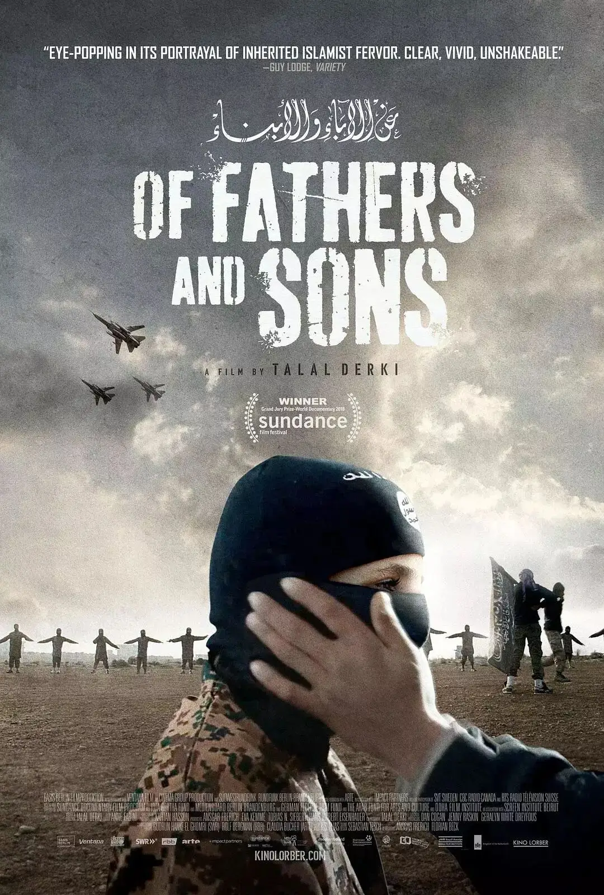
光看名字，就知道这部作品的份量。
导演塔拉勒·德尔基深入叙利亚一个恐怖分子的家中，跟拍三年，忠实记录了恐怖分子一家人的生活日常。
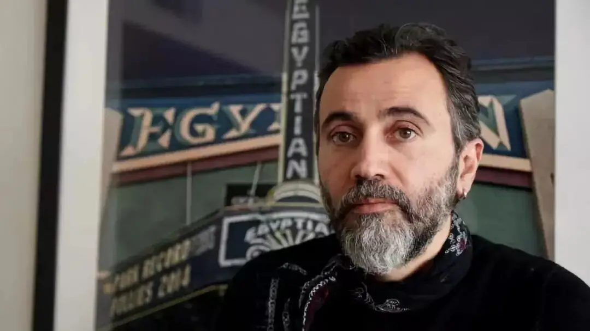
第一次，恐怖分子不再是一个令人闻风丧胆的符号，而是有血有肉地呈现在观众的面前。
这才让我们得以更深地了解极端分子及叙利亚问题。
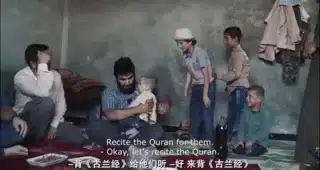
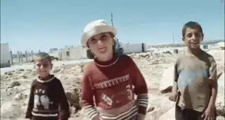
作品在圣丹斯电影节上引起广泛关注，并最终获得世界电影单元纪录片评审团大奖 ，同时也入围了第91届奥斯卡最佳纪录片提名。
而导演之所以冒着生命危险来完成这部作品，是因为充满杀戮、眼泪和破败的叙利亚是他的家乡。
他曾就是众多逃亡德国难民中的一员，故乡发生的变化令他心碎，所以他决定重返故乡，用镜头记录故乡的变化，并挖掘探讨极端分子问题的复杂性和严峻性。
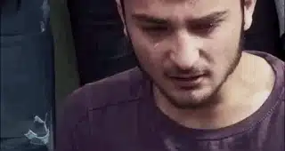
塔拉勒·德尔基拍摄的家庭是阿布·奥萨马一家。
阿布·奥萨马是努斯拉阵线中的坚定分子，他负责扫雷和制造炸弹。
这个阵线是基地组织的重要分支，他们是叙利亚内战中一支重要参战力量。
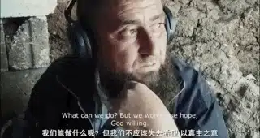
努斯拉阵属于伊斯兰教中的逊尼派，坚持原汁原味的伊斯兰信仰，以《古兰经》为绝对行为标准，反对任何世俗化浪潮，仇视任何异教徒和异教思想。
努斯拉阵线致力于推翻叙利亚阿萨德政府，旨在建立纯正的哈里发国，即政教合一的伊斯兰帝国。
因此，镜头下的阿布·奥萨马是一个坚定的伊斯兰信仰者，他对《古兰经》熟稔于心。
坚信真主将会赐给他们力量，将会建立一个公正的哈里发国，在那样的国度中将会充满荣耀与光辉，每个人都能够被公正对待。
面对充满动乱、满目疮痍的叙利亚，阿布·奥萨马也曾灰心，他曾独坐询问真主有生之年他能否见到改变。
他叩问自己能不能尊真主之意，见到伊斯兰全盛的光辉呢？
导演正是声称同情他们的理想和遭遇才有机会进行拍摄记录。
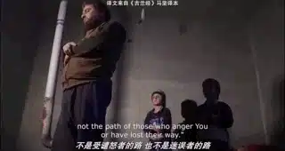
单从这种对信仰的热忱和坚定，阿布·奥萨马不比任何一个基督徒差，甚至走的更远，他可以为了信仰拒绝世俗生活、拒绝现代化。
这与我们印象中动不动就搞袭击和人肉炸弹的恐怖分子形象相去甚远。
一个坚定的信仰者何以会转变成十恶不赦的魔头呢？
这部纪录片在刚开始就给出了答案：战争播下仇恨的种子，而圣战来收割这些种子。
是战争留下的伤痛和仇恨激化了逊尼派的教义，导致信仰走向偏激，甚至最后完全背离了伊斯兰信仰。
在战乱中的叙利亚，杀光异教徒就等于遵真主旨意，杀人在阿布·奥萨马眼中并不是违背世俗法律甚至是信仰教条的恶行，而是充满荣耀的圣战。
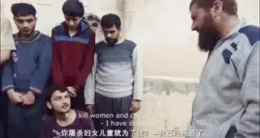
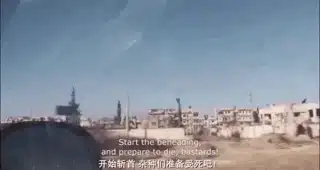
仇恨教育再加上拒绝现代化的原教旨主义成就了他们超越死亡的“勇气”，而同伴的每一次战死，非但不会让他们感觉害怕，反而会让他们走的更极端。
阿布·奥萨马坚定地告诉导演：
按真主之意。
每有一个孩子被杀死，将会另有一千个孩子出生。
每有一个英雄牺牲，将会另有一千个新英雄诞生。
我们会坚持斗争 ，解放叙利亚。
真主借给我们力量，无论需要多久。
真主的信徒将摧毁你们。
无论需要多久，真主的信徒将摧毁你们。
我们慷慨地泼洒热血，因为真主借给我们力量。
仇恨给了极端分子行动的力量和勇气，甚至成为了他们家庭生活的中心。
阿布·奥萨马有两个妻子，七个孩子，这些孩子的出生、名字都充满了浓浓的仇恨和“圣战”使命。
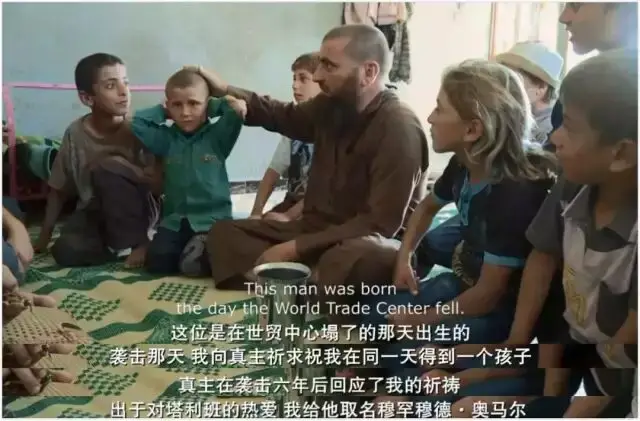
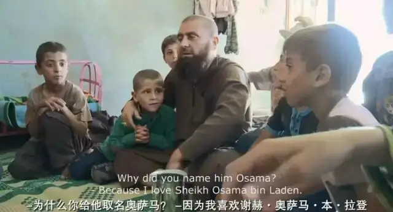
这些孩子的日常生活是我们这些普通人难以想象的。
他们在很小的时候，就会背古兰经。
在他们所受到的家庭教育中，学校、前途甚至食物都不是最重要的，只有信仰和真主是最伟大、最为重要的事。
当看到有女孩没有裹头巾的时候，他们的父亲就教育他们用枪去射杀女孩，因为她没有遵循《古兰经》，侮辱了信仰。
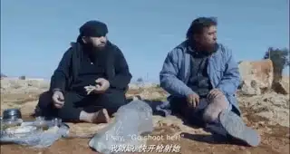
当他们对信仰产生反感，甚至说出亵渎之词的时候，他们将会受到所有人的谴责和敌视，会受到父亲严厉的处罚。
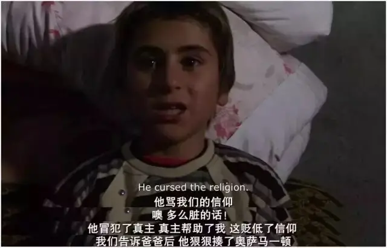
信仰对于他们不是选择的问题，而是什么时候从骨子里顺服的问题。
他们生活在枪林弹雨和炮弹声中，小小年纪便目睹了父亲亲手斩首别人的场景，纪录片中，一个小孩便模仿父亲斩首了一只小鸟的头。
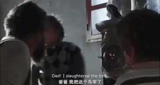
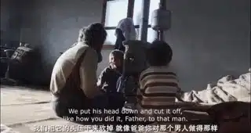
甚至，他们还会自制别人一踩就爆的炸弹。
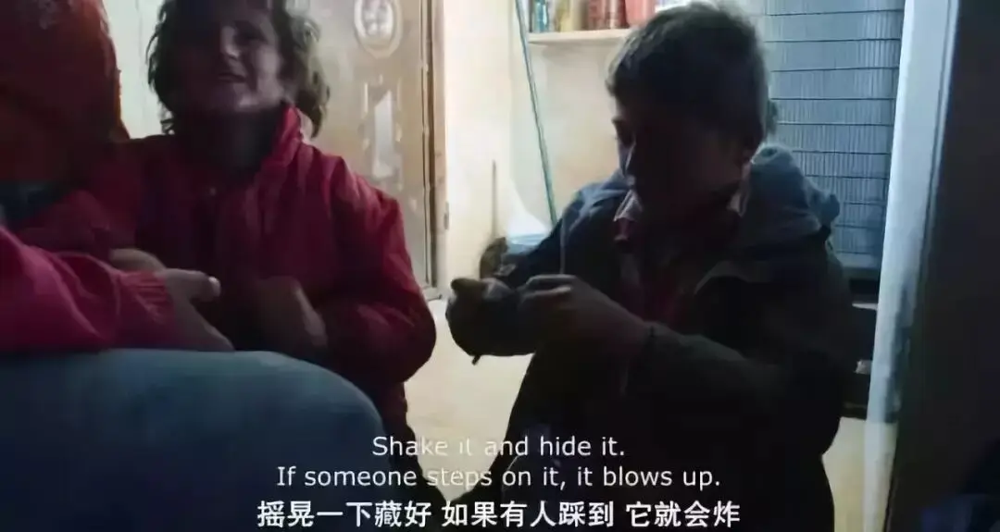
但他们依旧是孩子，脸上依旧充满着可爱的稚气，心里依旧有着很多善良的想法。
父亲踩到地雷被炸断腿后，一家人依旧会痛哭不已。
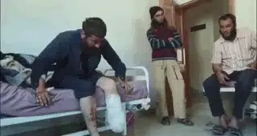
而这一切的不容易和伤痛，父亲告诉他们都是真主的旨意和异教徒、美帝国主义侵略的结果。
不论这些孩子的脸上充满多么大的困惑和不解，始终都是这两个回答。
直到有一天，这些观念流淌到他们身体血液里的每一个地方。
到最后，他们将毫无悬念地走上父亲的老路。
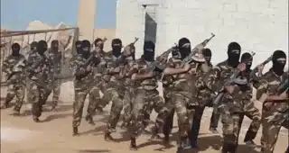
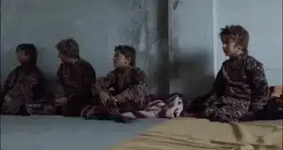
纪录片中，阿布最后将自己的孩子送到了恐怖分子训练营进行军事训练。
为了将这些孩子练就成为一群毫无畏惧的死士，训练者不断在孩子头边、脚边开枪。
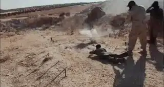
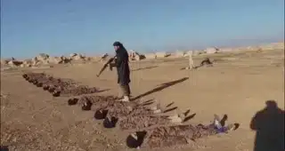
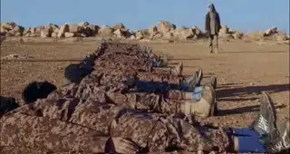
而一旦走火或者打歪，一个生命就会无声无息地消逝。
在经过这样恐怖的训练后，表现优秀的孩子会被挑选出来送到更高的训练营。
之后，他们将会被派往前线，进行恐怖袭击和战斗。
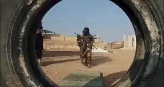
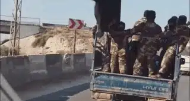
纪录片最后，阿布的大儿子奥萨马表现出色，被选上继续训练。
小他一岁的弟弟艾曼则被淘汰，回家继续读书。
从此，两兄弟的命运将截然不同。
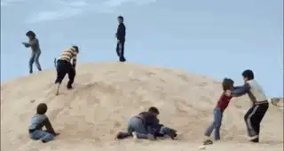
亲眼目睹着发生在这个家庭的种种，亲身见证了这些孩子命途的悲剧，导演心中充满了无奈和伤心。
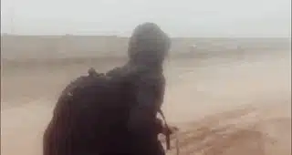
在最后一个镜头中，导演踏上了返回德国的路途。
他走在没有任何生命气息、充满荒败的故土里，步履蹒跚、摇摇晃晃，接着一个沉重的自白响起：
艾曼长成了一个青年，他在追求他的学业并照顾他的弟妹，奥萨马则被引向了死亡的道路。
再也不会有道路让我们重逢，他真诚的笑容和反叛的精神已是过去之事
至于我 ，正翻过人生的这一页并结束这场梦魇，然后回到家中，与身处柏林的家人团聚，一同带去的还有关于家乡巨变的回忆
这是一片与我记忆中完全不同的乡土！
这是一种比国破家亡更可怕的悲剧。
那里明明充满着令人肃然起敬的信仰，那里明明有着和世人一样面孔和心肠的人类，那里明明有着人间的情意，但却不可避免地循环在仇恨、谋杀和死亡命运的地狱中。
也许，人间天堂从来都是我们一厢情愿的妄想，这个地上本就没有盼望。
推荐阅读
▼
（点击图片即可获取全文）
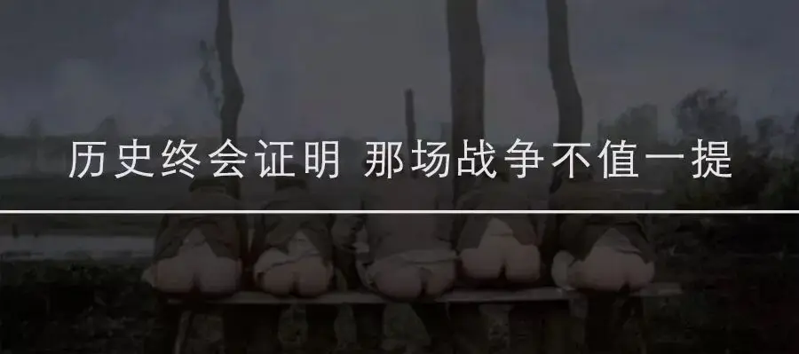

这里没有挑逗你眼目情欲的小鲜肉
也没有挑动你肉体情欲的段子
更没有膨胀你今生骄傲的鸡血
我们只在乎那些最质朴真诚的作品
在那里我们才能恢复真正的想象力
我们也坚信这才是我们真正需要的

ID:Six_hundred_hits
长按二维码，一键关注
【六百击】
-END-
电影评论
尽情分享朋友圈

苹果打赏通道
小提示：文末广告是腾讯配送广告，内容与本号无关，但您的每次点击（无需反复点）都会给平台带来几毛收益，欢迎您点击支持六百击。